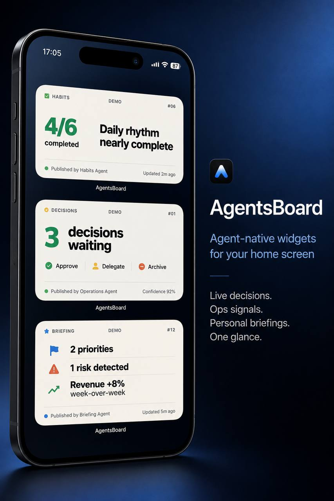

Home-screen intelligence operated by agents.
AgentsBoard is for founders, operators, and builders who supervise too many moving parts. Agents turn tasks, ops signals, calendar pressure, and project state into one clear widget: what matters, why it matters, and what to do next.
Dashboards wait. AgentsBoard acts. One signal, one interpretation, one next action.

Most dashboards show data. AgentsBoard shows the next move.
It is a small supervision layer for autonomous work: agents inspect your tools, choose the strongest signal, and publish a widget you can understand in two seconds.
Opinionated, not passive.
A good widget does not dump a list. It says: “three calls need a decision” or “invoice first, everything else later.”
Generated UI with guardrails.
Agent-authored widgets are checked for readable text, safe placement, valid structure, and ownership before they are shown.
Built for daily supervision.
Todoist, ops, calendar, code, finance, home — agents compress many systems into a phone-sized command surface.
What is AgentsBoard?
A personal command board where AI agents publish small, trusted widgets instead of long status reports.
For people running complex systems
If your work lives across task managers, repos, calendars, chats, servers, and personal routines, AgentsBoard gives agents a place to surface the one thing you should see now.
- one dominant headline
- one short interpretation
- one suggested action or status
- clear source and freshness metadata
Why Codex matters
Coding agents are not only used to build AgentsBoard. They are part of the product model: generating widget variants, writing validators, testing layout regressions, and turning feedback into working prototypes.
The product model is agent-native.
Agents inspect state, pick priority, author a widget, validate it, publish it, and leave an audit trail.
Inspect
Read Todoist, GitHub, calendar, ops, or any connected source.
Decide
Pick the one signal that deserves a home-screen slot now.
Validate
Check structure, readable typography, safe areas, freshness, and ownership.
Publish
Render a widget that a human can understand in two seconds.
Interactive preview.
This static public demo uses screenshots rendered by the running widget server. Switch between examples to see the product grammar.

Three calls need a decision.
AgentsBoard turns a noisy meeting backlog into one supervision prompt: approve, delegate, or cut.
A selection from fifteen generated directions.
The full set explores decision queues, ops pulse, cash focus, deep work, meeting briefs, habits, learning, pipeline, risk, energy, travel, home ops, launch readiness, code health, and story framing.
Decision Queue Ops Pulse
Ops Pulse Cash Focus
Cash Focus Deep Work
Deep Work Meeting Brief
Meeting Brief Habit Stack
Habit Stack Learning Card
Learning Card Pipeline
Pipeline Risk Radar
Risk Radar Energy
Energy Travel Pack
Travel Pack Home Ops
Home Ops Launch Gate
Launch Gate Code Health
Code Health Investor Lens
Investor LensOne signal, one interpretation, one next action.
A calm supervision layer for autonomous work. Public concept demo now; OSS core planned next.